Da Mamãe · Feijão
Feijão Carioca
Feijão carioca Da Mamãe. Uma variedade para valorizar os sabores da cozinha brasileira.
Explore nossas categorias, conheça as marcas e encontre os produtos para o seu pedido.
23 produtos
Feijão carioca Da Mamãe. Uma variedade para valorizar os sabores da cozinha brasileira.

Feijão preto Da Mamãe. Uma variedade para valorizar os sabores da cozinha brasileira.

Feijão fradinho (caupi) Da Mamãe. Uma variedade para valorizar os sabores da cozinha brasileira.

Feijão jalo Da Mamãe. Uma variedade para valorizar os sabores da cozinha brasileira.
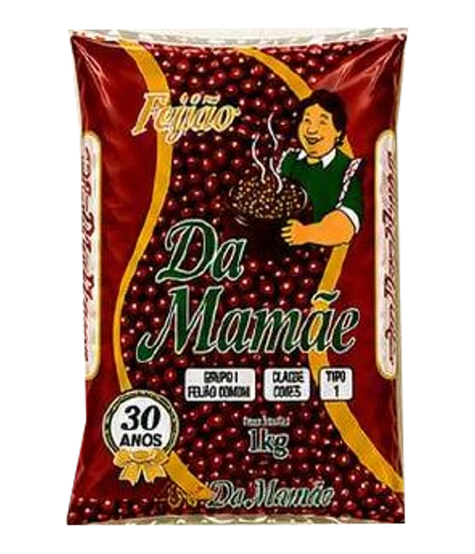
Feijão vermelho Da Mamãe. Uma variedade para valorizar os sabores da cozinha brasileira.
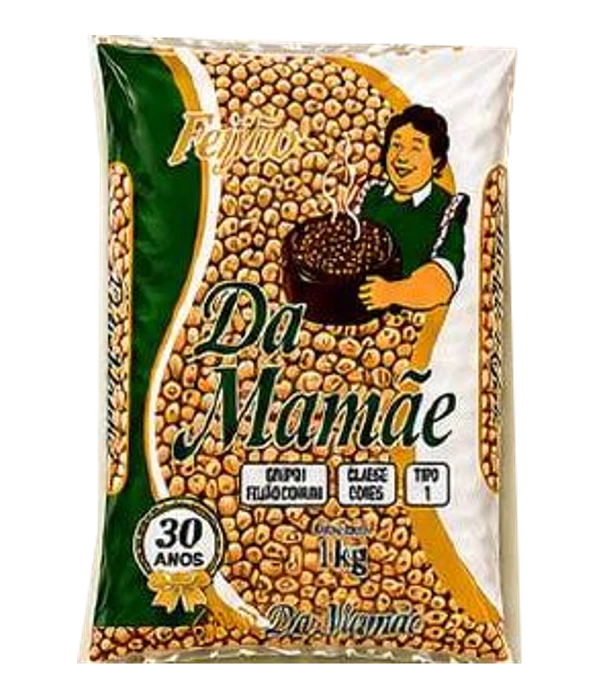
Feijão rajado (cavalo claro) Da Mamãe. Uma variedade para valorizar os sabores da cozinha brasileira.
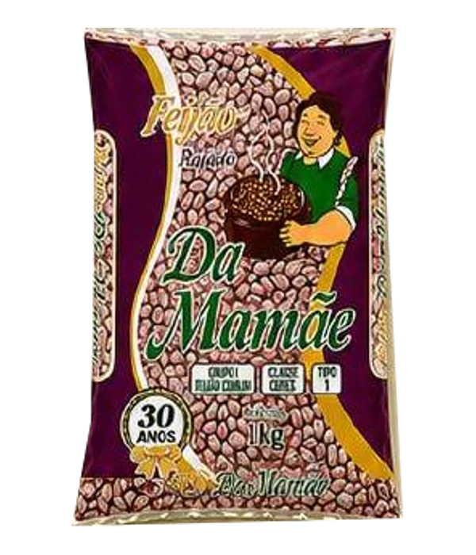
Feijão rajado Da Mamãe. Uma variedade para valorizar os sabores da cozinha brasileira.
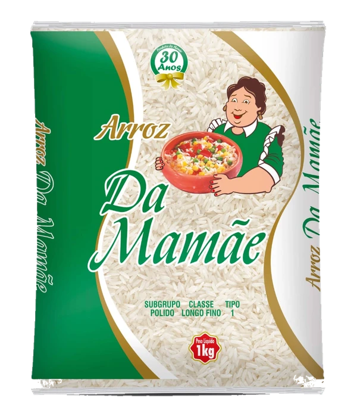
Arroz branco, polido, longo fino, tipo 1. Produzido no Rio Grande do Sul, para acompanhar os sabores de todos os dias.
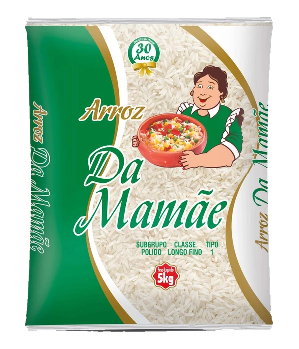
Arroz branco, polido, longo fino, tipo 1. Produzido no Rio Grande do Sul, para acompanhar os sabores de todos os dias.

Açúcar cristal branco para bebidas, sobremesas e aquele doce que reúne a família.
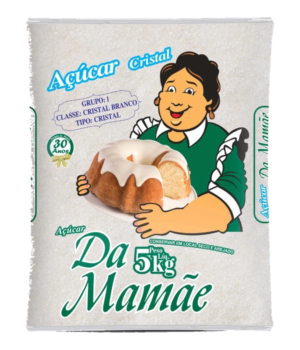
Açúcar cristal branco para bebidas, sobremesas e aquele doce que reúne a família.

Farinha de mandioca para farofas, acompanhamentos e receitas cheias de sabor.

Farinha de mandioca para farofas, acompanhamentos e receitas cheias de sabor.
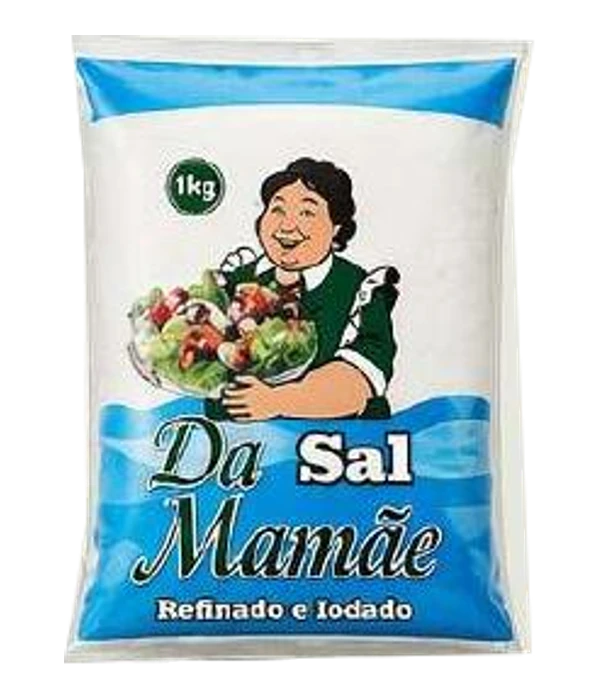
Um ingrediente essencial para temperar e finalizar suas receitas.
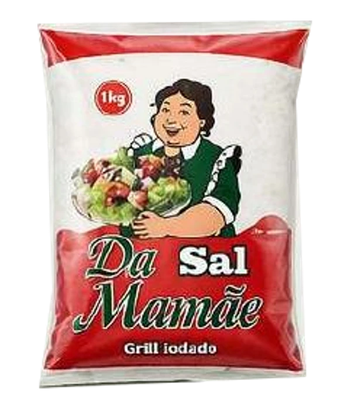
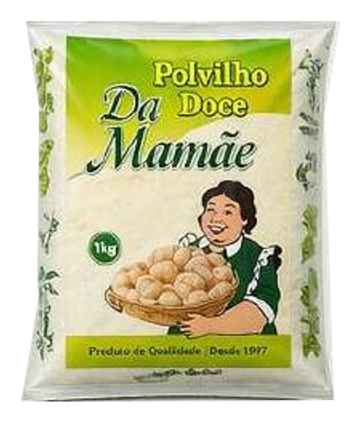
Polvilho doce para biscoitos, pães de queijo e preparos da cozinha brasileira.

Milho para pipoca para transformar uma pausa em um momento gostoso.
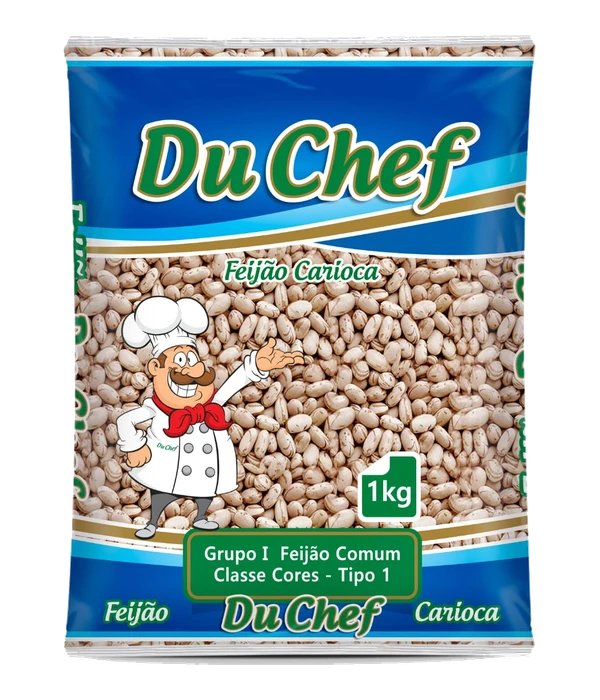
Feijão carioca Du Chef. Mais uma opção do portfólio P&R para a sua mesa e o seu negócio.
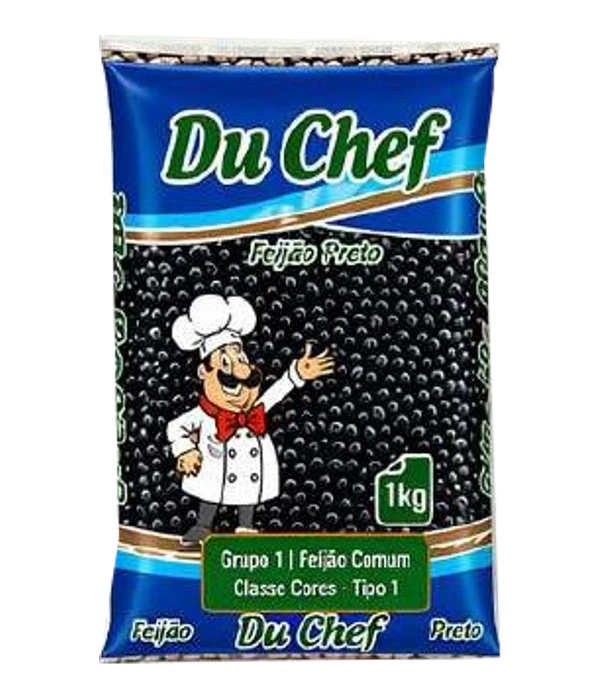
Feijão preto Du Chef. Mais uma opção do portfólio P&R para a sua mesa e o seu negócio.
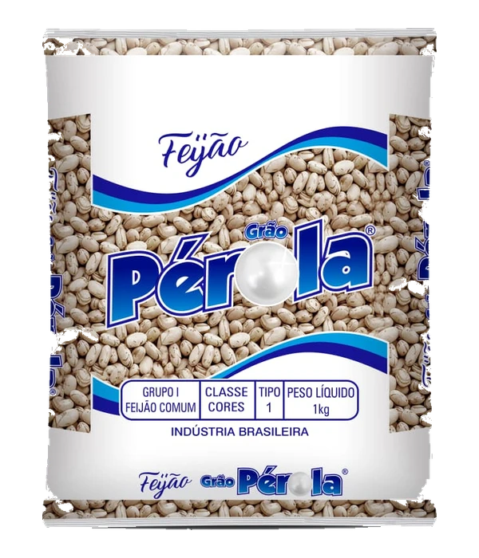
Feijão carioca Pérola. Mais uma opção do portfólio P&R para a sua mesa e o seu negócio.
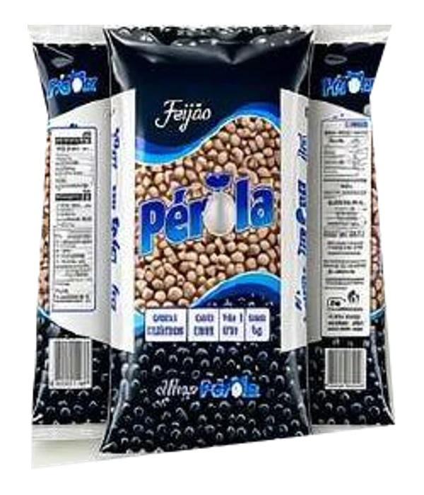
Feijão preto Pérola. Mais uma opção do portfólio P&R para a sua mesa e o seu negócio.
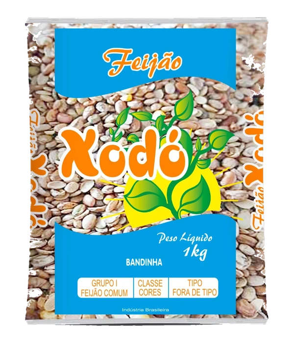
Feijão carioca Xodó. Mais uma opção do portfólio P&R para a sua mesa e o seu negócio.
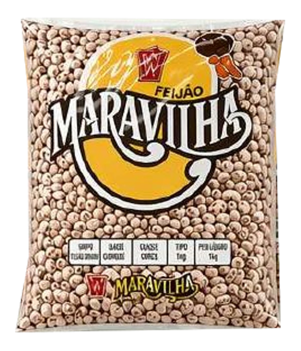
Feijão carioca Maravilha. Mais uma opção do portfólio P&R para a sua mesa e o seu negócio.
Experimente outra busca ou remova os filtros.